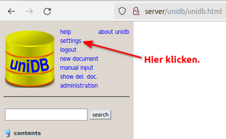
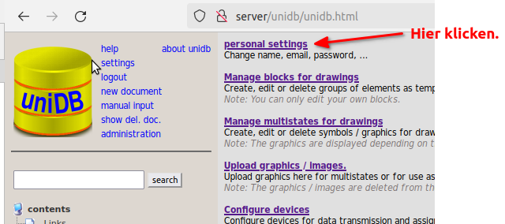
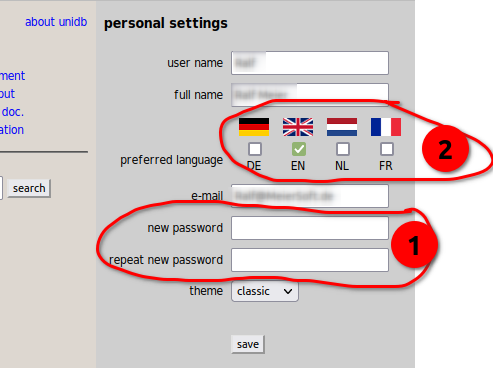

admin Passwort ändern
| 1.) | Rufen Sie die unidb in Ihrem Browser auf und melden Sie sich als Admin an: | ||
| Benutzername: | admin | ||
| Passwort: | adminDH | ||
2.) | Klicken Sie auf den Link settings oben links. | ||
 | |||
3.) | Es öffnet sich die Einstellungsseite. Folgen Sie dort bitte dem Link personal settings. | ||
 | |||
4.) | Im markierten Bereich 1 können Sie nun Ihr neues Passwort eintragen. | ||
| Wenn Sie möchten, dann wählen Sie im Bereich 2 noch eine andere Sprache aus. | |||
| Vergessen Sie bitte nicht, auf den Schalter save ganz unten zu drücken. | |||
 | |||
5.) | fertig | ||